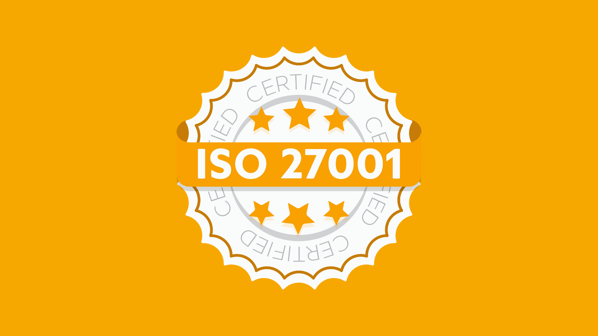

Estándares en Servicios
Los estándares en servicios de cómputo en la nube son conjuntos de reglas, normas y especificaciones que guían la implementación y el funcionamiento de los servicios en la nube. Estos estándares son fundamentales para garantizar la interoperabilidad, la seguridad y la calidad de los servicios en la nube, así como para promover la adopción y el desarrollo continuo de tecnologías relacionadas.
Estándares de Seguridad:
- ISO 27001: Especifica requisitos para establecer, implementar, mantener y mejorar un sistema de gestión de seguridad de la información (SGSI) dentro del contexto de los riesgos comerciales de una organización.
- PCI DSS: Estándar de seguridad de datos para la industria de tarjetas de pago que establece requisitos para la protección de datos de tarjetas de crédito y débito durante la transmisión, procesamiento y almacenamiento.
Estándares de Interoperabilidad:
- OAuth: Protocolo de autorización que permite a los usuarios autorizar a aplicaciones de terceros para acceder a sus recursos sin revelar sus credenciales de autenticación.
- OpenAPI (anteriormente Swagger): Especificación para describir, producir y consumir servicios web RESTful, lo que facilita la creación de documentación y herramientas para interactuar con APIs.
Estándares de Gestión de Servicios:
- ITIL (Biblioteca de Infraestructura de Tecnologías de la Información): Conjunto de prácticas recomendadas para la gestión de servicios de TI que abarca aspectos como la entrega de servicios, la gestión de incidentes, la gestión de cambios y la gestión de activos de TI.
- COBIT (Objetivos de Control para la Información y Tecnologías Relacionadas): Marco de gobierno y gestión de TI que proporciona un conjunto de mejores prácticas para garantizar el alineamiento de las TI con los objetivos comerciales y la mitigación de riesgos.
Estándares de Portabilidad de Aplicaciones:
- Docker: Plataforma de contenedores que permite empaquetar, distribuir y ejecutar aplicaciones en entornos de contenedores, lo que facilita la portabilidad y la implementación consistente en diferentes plataformas.
- Kubernetes: Sistema de orquestación de contenedores que automatiza la implementación, el escalado y la gestión de aplicaciones contenerizadas, lo que permite la portabilidad y la gestión eficiente en entornos de nube.
Estándares de Seguridad de Datos:
- GDPR (Reglamento General de Protección de Datos): Legisla en la UE la protección de datos personales de las personas físicas, garantizando la libre circulación de esos datos.
- HIPAA (Ley de Portabilidad y Responsabilidad del Seguro Médico): Estándar para la protección de información médica en los Estados Unidos, estableciendo reglas para su uso y divulgación.